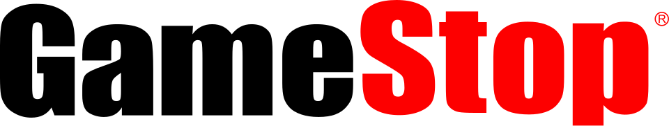

홈 > 브랜드 매거진 > Noz
Noz
노즈(Noz)는 파산·과잉재고 상품을 매입해 저가로 되파는 프랑스의 재고처리 할인 소매 체인이다.
산업 분야 리테일·커머스 · 공개 등급 자료 기반 · 브랜드 평가 4.1 ★

한눈에 보는 브랜드
노즈(Noz)는 프랑스에 본사를 둔 유럽 최대의 재고떨이(déstockage) 전문 디스카운트 소매 체인이다. 1976년 7월 20일 레미 아드리옹이 라발에서 파산 공장의 의류 묶음을 사들여 '르 솔되르(Le Soldeur)'라는 첫 매장을 연 것이 출발점이며, 첫 번째 전환점은 1992년 상호에 '솔드(solde, 세일)' 사용이 규제되자 브랜드명을 '노즈'로 바꾼 사건이고, 두 번째는 단일 매장을 전국 300개 이상으로 확장하며 유럽 1위 사업자로 도약한 것이다.
2024년 매출 약 7억9천만 유로로 전년 대비 두 자릿수 성장했고, 2025년 기준 매장 약 336곳, 임직원 6천여 명, 40여 개국 출신으로 구성된 거의 50년 역사의 가족 경영 기업이다.
브랜드 관점
노즈의 핵심 차별점은 자체 제품을 전혀 만들지 않는다는 데 있다. 액션·지피·센트라코르 같은 바자르형 할인점이 상시 품목을 매대에 채우는 것과 달리, 노즈는 제조사·유통사의 잉여재고, 과잉생산품, 주문 취소분, 시즌 종료분, 파산 청산 물량, 운송 분쟁 화물만을 대량 매입해 기존 유통가 대비 30~80% 낮은 가격에 되판다.
따라서 매장 구성은 그날그날 입고에 따라 달라지며, 같은 상품이 다시 들어온다는 보장이 없다. 이 모델은 본질적으로 낭비를 줄이는 순환 경제형 사업이어서 인플레이션 국면이나 의류·인테리어 업계 불황 때 오히려 매입 기회가 늘어나는 역행적 강점을 가진다.
매입의 약 37%는 프랑스, 37%는 유럽, 26%는 그 외 지역에서 이뤄진다. 한국 독자에게는 정상가 유통망에서 소화되지 못한 정품 브랜드 물량을 초저가로 흡수하는 '재고 가치 재발견' 비즈니스라는 점이 흥미롭다.
국내에서 산발적으로 운영되는 떨이·아울렛·B급 상품 매장과 달리, 노즈는 매입 역량 자체를 기업의 핵심 경쟁력으로 시스템화했다는 점에서 구조가 다르다.
시작과 성장
1970년대 프랑스는 산업 구조조정으로 공장 도산과 청산 물량이 빈번하던 시기였고, 레미 아드리옹은 1976년 한 의류 공장의 법정 청산 물량을 사들여 그해 7월 20일 라발에 '르 솔되르'라는 단일 매장을 열었다. 첫 전환점은 1987년으로, 매장이 10곳에 이르며 브르타뉴와 페이드라루아르 지역을 중심으로 체인의 토대를 갖췄다.
두 번째 전환점은 1992년, 상호에 '솔드(세일)'라는 단어 사용을 금지하는 상업 규제가 도입되자 그룹명을 '노즈'로 변경한 사건이다. 이 개명은 단순 회피가 아니라, 특정 세일 행사가 아닌 상시적 재고 매입 사업으로의 정체성 전환을 상징했다.
이후 노즈는 본사를 마옌주 생베르트뱅으로 옮기고, 연간 25~30개씩 신규 매장을 늘리며 프랑스 전역 300곳 이상, 물류 플랫폼 12곳을 갖춘 유럽 1위 사업자로 성장했다. 2023년 매출이 전년 대비 약 40% 급증했고, 2024년에는 약 7억9천만 유로에 이르렀다.
최근에는 의류·장식 업계의 청산 물량을 대규모로 흡수하며 성장세를 이어가고 있다.
브랜드 아이덴티티
노즈의 브랜드 가치는 '낭비와의 싸움'과 '구매력 회복'에 뿌리를 둔다. 공급사의 팔리지 않은 재고를 소비자에게는 횡재가 되도록 되살린다는 비전이 그 중심이며, 사회·환경에 긍정적 영향을 주는 순환형 사업임을 전면에 내세운다.
비주얼 아이덴티티는 간결하고 강한 'NOZ' 워드마크를 핵심으로 하며, 화려함보다 가격 경쟁력과 실용을 강조하는 정직한 톤을 취한다. 스스로를 '기회를 사냥하는 자(opportunity hunter)'로 규정하는 브랜드 보이스는 매대 구성이 매번 달라지는 '보물찾기'식 쇼핑 경험과 맞닿아 있다.
타깃은 가격에 민감한 광범위한 일반 소비자층으로, 프랑스에서 월 약 300만 명이 매장을 찾는다. 자사를 '유니버스(L'Univers Noz)'로 칭하며 단일 점포가 아닌 매입·물류·판매를 아우르는 생태계로 포지셔닝한다.
제품과 서비스
취급 카테고리는 식품(식료품·음료·과자·초콜릿·차·커피), 패션(여성·남성·아동 의류, 신발, 액세서리), 위생·뷰티(화장품·향수·세정용품), 가정·정원(인테리어 소품·생활용품·소형 가전·공구·정원 가구·바비큐) 등 전 품목을 아우르는 종합형이다. 다만 모든 품목이 잉여재고·시즌 종료분으로만 구성돼 상시 품목이 없는 것이 특징이다.
매장 포맷은 프랑스 전역에 분산된 약 336개 오프라인 디스카운트 매장과 이를 뒷받침하는 12개 물류 플랫폼이며, 온라인 카탈로그로 입고 정보를 안내한다.
현재 상태
본사는 프랑스 마옌주 생베르트뱅(라발 인근)에 있으며, 'L'Univers Noz'라는 이름의 가족 경영 그룹이 지배한다. 창업자 레미 아드리옹이 여전히 그룹을 이끄는 경영자로 알려져 있다.
국적은 프랑스이며, 2025년 기준 프랑스 내 약 336개 매장과 6천여 명의 임직원을 둔 유럽 재고떨이 시장 1위 사업자로 활발히 운영 중이다. 의류·인테리어 업계의 청산 물량 증가에 힘입어 성장세를 이어가며 글로벌 매입 리더를 목표로 확장하고 있다.
비상장 기업으로 구체적 지분 구조 세부는 미공개.
타임라인
정리된 연도형 이벤트가 없습니다.
BI/CI 변천사
함께 읽을 브랜드
Fl
Flaum
리테일·커머스 · 편집 검수FlaumFlaum는 2025년에 기록된 Shoppy Shop Brands 계열의 브랜드 아이덴티티 사례입니다. M/OTG가 아이덴티티 작업의 디자이너로 기록되어 있습니다....
Lo
Lolo
리테일·커머스 · 편집 검수LoloLolo는 2024년에 기록된 Shoppy Shop Brands 계열의 브랜드 아이덴티티 사례입니다. Odds Studio가 아이덴티티 작업의 디자이너로 기록되어 있...
Ye
Yellowbird
리테일·커머스 · 편집 검수YellowbirdYellowbird는 2024년에 기록된 Shoppy Shop Brands 계열의 브랜드 아이덴티티 사례입니다. Gander가 아이덴티티 작업의 디자이너로 기록되어...

리테일·커머스 · 자료 기반GameStop게임스톱(GameStop)은 미국에 본사를 둔 세계 최대의 비디오게임 전문 소매 기업이다.
아마존은 쇼핑몰보다 고객의 기다림과 탐색 비용을 줄이는 시스템 브랜드에 가깝다. 상품 범위, 검색, 추천, 배송, 결제 경험이 하나로 연결되면서 브랜드의 가치는 편리...
Ay
Ayoh!
리테일·커머스 · 편집 검수Ayoh!Ayoh!는 2024년에 기록된 Shoppy Shop Brands 계열의 브랜드 아이덴티티 사례입니다. Center가 아이덴티티 작업의 디자이너로 기록되어 있습니다....
Be
Best of the Bone
리테일·커머스 · 편집 검수Best of the BoneBest of the Bone는 2025년에 기록된 Shoppy Shop Brands 계열의 브랜드 아이덴티티 사례입니다. Universal Favourite가 아이...
Ch
Chilly Willy
리테일·커머스 · 편집 검수Chilly WillyChilly Willy는 2025년에 기록된 Shoppy Shop Brands 계열의 브랜드 아이덴티티 사례입니다. The Young Jerks가 아이덴티티 작업의...